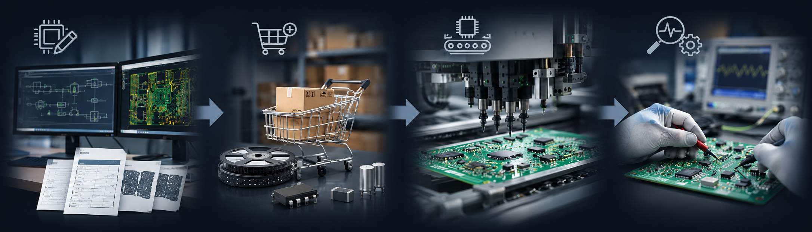
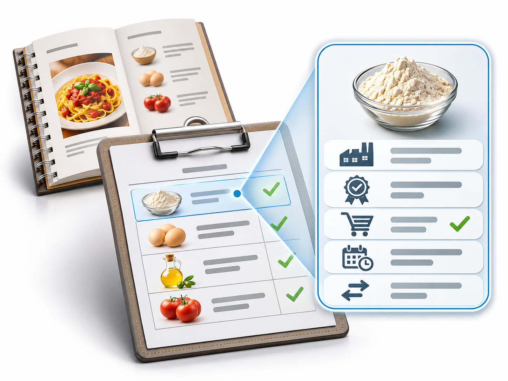
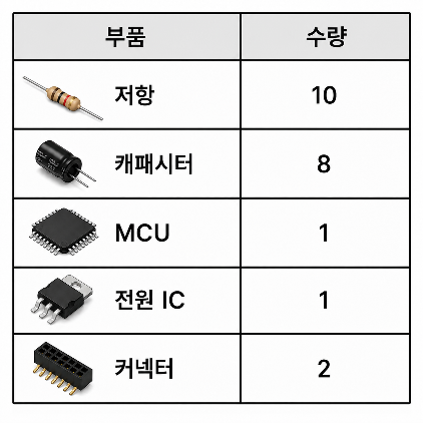
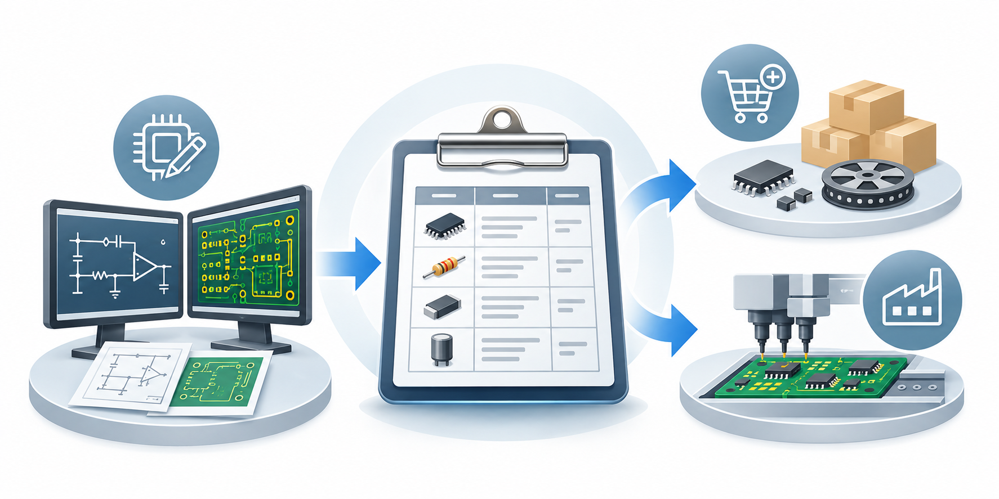
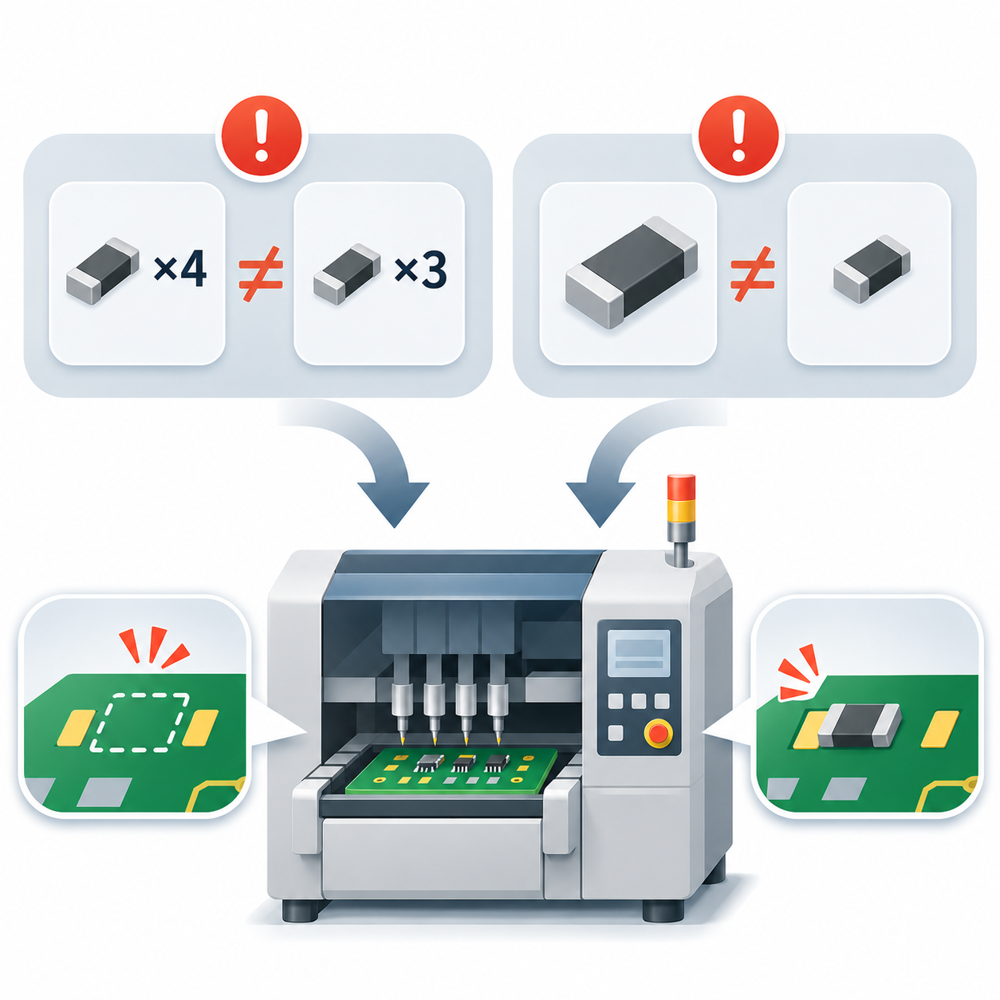
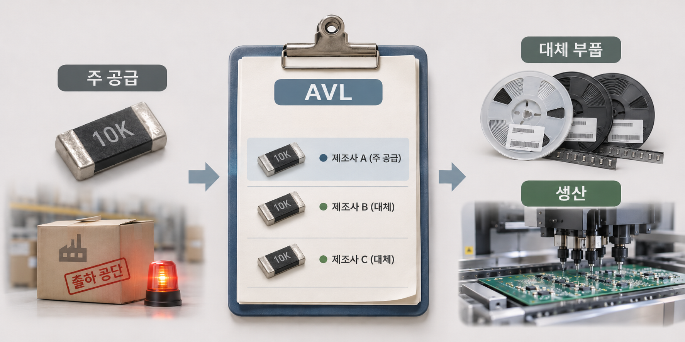
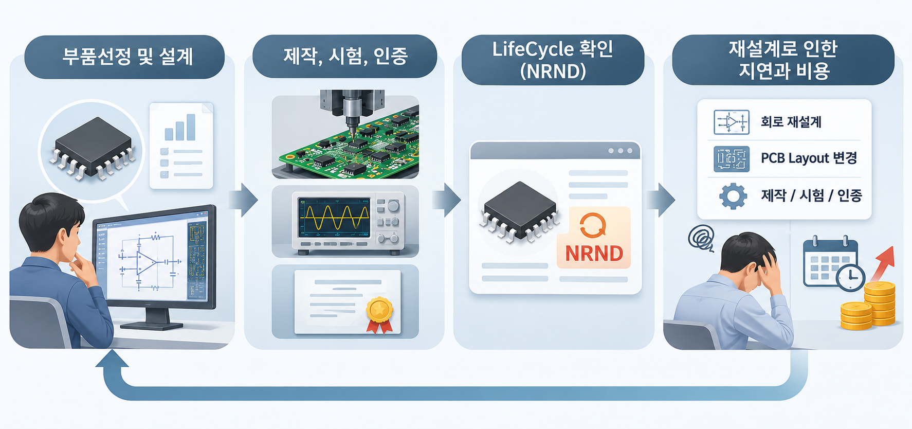
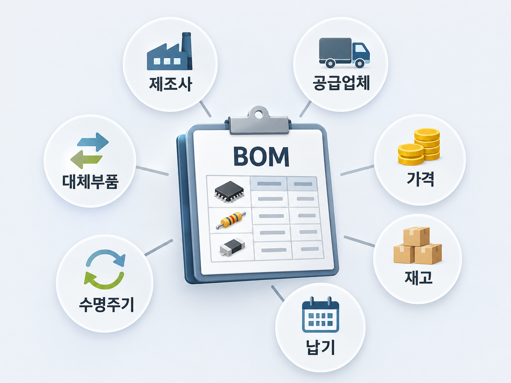
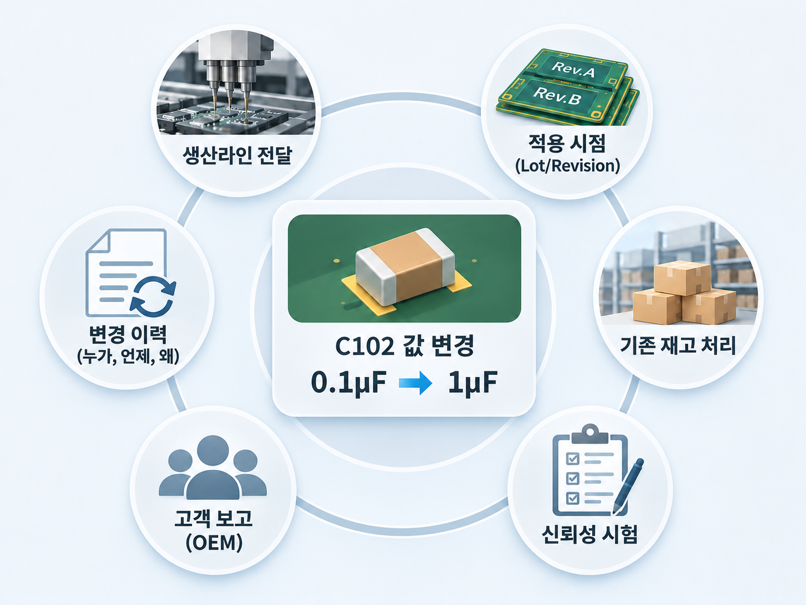

PCB 설계와 부품 구매, 조립을 연결하는 부품 정보의 중심

앞선 내용에서 우리는 PCB 개발의 주 요소인 회로도 설계, PCB Layout, PCB Library 등에 대해 살펴보았습니다.
올바른 Library로 회로도와 PCB Layout 설계를 잘 마친 후에는 무엇을 해야 할까요?
실제 제품을 만들려면 설계된 데이터로 PCB 기판을 제작하고, 조립할 부품을 구매해야 하고, 생산라인에서는 PCB 기판에 부품을 어떻게 조립해야 하는지 알아야 합니다. 구매 부서는 필요한 부품들이 공급 가능한지 확인해야 하며, 품질 부서에서는 각 제품에 어떤 부품이 사용되었는지 추적할 수 있어야 합니다.
이때 필요한 것이 바로 BOM(Bill of Materials)입니다.
요리로 비유한다면 PCB 설계가 레시피를 만드는 과정이고, BOM은 그 레시피에 들어가는 재료의 이름과 수량, 규격, 제조사 등을 정리한 장보기 목록에 가깝습니다.
그런데 실제 제품을 만들기 위해서는 “밀가루 500g” 정도로 끝나지 않습니다. 어떤 제조사의 어떤 부품인지, 현재 구매 가능한지, 단종 예정은 아닌지, 품질 문제는 없는지, 다른 부품으로 바꿔도 되는지까지 알아야 하며, PCB기판의 어느 위치에 장착해야 하는 지도 알아야 합니다.

전자제품의 BOM이 복잡한 이유가 바로 여기에 있습니다.
1. 그래서, BOM이 뭐예요?
PCB 하나에는 적게는 수십개부터 많게는 수천개의 부품이 사용됩니다.
저항, 커패시터, IC, 커넥터, 인덕터와 같은 기본적인 부품부터 센서, 모듈, 스위치, 반도체IC 등 다양한 부품이 들어갑니다.

예를 들어 표와 같이 어떤 PCB에 5가지의 부품이 총 22개 사용된다고 가정해 보겠습니다.
언뜻 생각하기에는 이렇게 부품의 종류와 수량을 정리한 표만 있으면 제품을 만들어 낼 수 있을 것 같습니다. 하지만 부품의 수급과 조립을 위해서는 더 많은 정보가 필요합니다.
예를 들어 저항 10개가 있다고 해도 내가 사용할 저항의 저항값, 정격전력, 패키지 형태, 제조사, 제조사의 Part Number 등이 필요하고, 부품의 사용 승인여부나 대체 가능한 부품 등의 부가 정보도 필요할 수 있습니다. 부품을 어느 위치에 조립하는 지도 알아야 합니다
따라서 실제 BOM에는 일반적으로 다음과 같은 정보가 포함됩니다.
- Reference Designator (PCB 기판에서의 위치식별 ID)
- 부품명
- 부품 사양 (저항값, 정격전력, 패키지 형태 등)
- 제조사 및 제조사 Part Number
- 공급업체 정보
- 부품의 Lifecycle 상태
- 승인 상태
- 대체 가능 부품
* 사내에 부품관리 환경이 잘 구축되어 있다면 Reference Designator와 사내 Part Number, 수량 만으로 구성되기도 합니다.
즉, BOM은 설계 정보와 구매·생산 정보를 연결하는 연결고리라고 볼 수 있습니다.

2. BOM이 중요한 이유
BOM이 중요한 가장 직접적인 이유는 구매, 생산, 품질 등의 업무가 모두 BOM을 필요로 하기 때문입니다.
2.1 구매
구매 부서는 BOM을 보고 필요한 부품을 조달합니다.
예를 들어 어떤 PCB를 1,000장 조립해서 만들려면 각각의 부품이 총 몇 개 필요한지 알아야 합니다. PCB 한 장에 특정 커패시터가 5개씩 들어간다면 커패시터는 최소 5,000개 필요합니다. 이 부품이 다른 PCB에도 사용된다면 필요한 수량을 합산해야 합니다.
실제 구매에서는 여기서 끝나지 않습니다. 포장 단위와 최소 주문 수량(MOQ), 납기, 가격, 기존 재고량 등도 함께 고려해야 하고, 생산 계획에 차질이 없도록 준비해야 합니다. 특히 IC처럼 가격이 높거나 수급이 불안정한 부품은 하나하나가 생산 가능 여부를 좌우하기도 합니다.
2.2 생산
생산에서는 BOM을 기준으로 어떤 부품 몇 개를 어디에, 어떻게 조립해야 하는지 판단합니다.
PCB Assembly, 즉 PCB 조립과정에서는 SMT 장비가 부품을 자동으로 실장하기 때문에 정확한 부품 정보가 필요합니다.
예를 들어, 어떤 부품이 설계에는 4개가 사용되었는데 BOM에서는 수량이 3개로 되어 있으면 어떤 일이 발생할까요?
혹은 설계에서 사용한 부품이 BOM 에는 다른 크기의 부품으로 되어 있다면 어떻게 될까요?
생산 준비 단계에서 오류가 발견되거나, 부품 하나가 부족한 상태로 생산이 진행될 수 있습니다.
이와 같이 BOM은 생산에 기본이 되는, 매우 중요한 기준 정보입니다.

회사에 따라서는 제품 전체를 구성하는 구조를 계층적으로 관리하는 Multi-Level BOM이 사용되기도 합니다. 예를 들어, 제품 → Main Board → 수작업부품들 → SMT부품들과 같은 상하구조로 제품을 표현할 수 있습니다. 이렇게 하면 단순히 부품을 나열하는 것이 아니라 제품의 구성이 어떻게 이루어져 있는지를 관리할 수 있습니다.
2.3 품질
BOM은 품질관리에도 중요한 역할을 합니다. 제품에 문제가 발생했을 때 어떤 부품이 사용되었는지, 다른 제품에도 문제가 있을 지 확인해야 하기 때문입니다.
예를 들어 어떤 제품에 문제가 발생했는데 그 원인이 특정 제조사의 커패시터 문제로 밝혀졌다고 가정해 보겠습니다. 이때 확인할 것들은 다음과 같습니다.
- 어느 PCB Revision에 언제부터 사용되었는가?
- 어느 생산 Lot에 사용되었는가?
- 해당 부품이 어느 제품들에 사용되었는가?
이런 추적이 가능해야 문제가 발생한 제품을 정확하게 선별하고 대응할 수 있습니다.
따라서 BOM은 단순한 생산용 문서가 아니라 제품의 구성 이력을 추적하고 문제 발생시에 대응하기 위한 중요한 품질 정보이기도 합니다.
3. AVL과 대체부품 관리
3.1 AVL(Approved Vendor List)이란?
필요한 부품들을 각각 하나의 제조사에서만 공급받는 것은 위험할 수 있습니다.
예를 들어 어떤 저항을 특정 제조사의 제품으로만 사용하도록 정해 놓았는데, 해당 제조사의 공급에 문제가 생긴다면 설계에는 문제가 없지만 대체할 부품을 공급할 업체를 찾고 검증할 때까지 제품 생산을 할 수 없는 상황이 발생할 수 있습니다.
이런 문제를 줄이기 위해 기업에서는 AVL(Approved Vendor List, 승인된 공급업체)을 운영합니다.
AVL은 말 그대로 승인된 제조사 또는 공급업체의 목록입니다. 믿을만한 부품을 잘 공급할 수 있는 여러 제조사를 사전에 검토하고 승인해 두는 것입니다.
예를 들어 다음과 같이 관리할 수 있습니다.
| 부품 기능 | Primary | Alternative (대체공급사) |
|---|---|---|
| 저항 | Vendor A | Vendor B, Vendor C |
| 커패시터 | Vendor D | Vendor E, Vendor F, Vendor G |
| DC/DC Converter | Vendor H | Vendor I |
이렇게 해 두면 Primary로 지정된 부품의 공급에 문제가 발생했을 때 대체 공급사로 빠르게 전환할 수 있습니다.
3.2 Multi Vendor 전략
이를 조금 더 넓게 보면 Multi Vendor 전략과 연결됩니다.
하나의 부품을 하나의 공급처에만 의존하지 않고 여러 공급처를 확보하는 것을 Multi Source 또는 Multi Vendor 전략이라고 부릅니다.
여기서 중요한 점이 하나 있습니다. 대체부품이라고 해서 단순히 같은 용량값이면 사용할 수 있는 것은 아닙니다. 예를 들어 10kΩ 저항이라고 해서 모든 10kΩ 저항이 완전히 동일한 것은 아닙니다. 부품의 크기, 정격전력, 허용오차, 온도 특성, 신뢰성, 패키지 등이 다를 수 있습니다.
IC는 더욱 복잡합니다. Pin-to-Pin 호환이 되는지, 전기적 특성이 같은지, 인증 조건을 만족하는지 등을 확인해야 합니다.
즉, 대체부품은 “비슷한 부품”이 아니라 “검토와 승인을 거쳐 확인된 부품”이라고 정의할 수 있습니다.

4. Lifecycle 관리
부품 제조사는 출시한 후 일정 기간 생산한 뒤 언젠가는 생산을 중단할 수 있습니다. 따라서 BOM을 관리할 때에는 부품의 Lifecycle 도 중요합니다.
대표적인 Lifecycle 상태는 다음과 같습니다.
- Active — 부품이 현재 정상적으로 생산되고 판매되는 상태입니다. 제품 개발이나 양산에 사용할 수 있는 일반적인 상태라고 볼 수 있습니다.
- NRND(Not Recommended for New Design) — 현재 생산은 되고 있지만 새로운 설계에는 가급적 사용하지 말라는 의미로 쓰입니다. 당장은 구매할 수 있지만 제조사가 단종을 고려하고 있거나 잠재적인 수급 문제가 예상되었을 수 있습니다.
- EOL(End of Life) — 해당 부품의 생산 종료가 결정되었거나 생산이 종료된 상태입니다. EOL 부품을 사용하는 PCB가 있다면 향후 생산을 계속하기 어려울 수 있으므로 대체품 검토가 필요합니다.
부품의 Lifecycle은 구매 단계에서뿐 아니라 설계 단계에서도 확인해야 합니다.
예를 들어 설계자가 성능이 좋은 IC를 선택했는데, 이 IC가 NRND상태라는 것을 뒤늦게 발견한다면 어떻게 될까요? 제품을 개발하여 제작·테스트를 마치고 인증을 받아 양산에 들어가려 하는데, 사용된 부품이 EOL(단종) 통보를 받는다면 상당히 곤란한 상황이 됩니다.
회로를 다시 설계하고 PCB Layout을 변경하고 제작과 시험을 다시 거쳐야 할 수도 있습니다.

따라서 설계자는 부품을 선택할 때부터 "이 부품이 지금 좋은가?"뿐만 아니라 "앞으로도 사용할 수 있는가?"도 함께 살펴봐야 합니다. 이를 위해서는 부품의 Lifecycle 정보를 체계적으로 관리하고 설계 과정에서 쉽게 확인할 수 있도록 지원하는 프로세스와 시스템이 갖춰져야 합니다.
5. 공급망 리스크와 BOM
최근 전자제품 개발에서 BOM 관리가 더욱 중요해진 이유 중 하나는 공급망의 불확실성이 커졌기 때문입니다.
특정 부품의 공급이 갑자기 줄어들거나 가격이 크게 상승하면 설계 자체에는 문제가 없지만 제품을 생산하는 데에 문제가 발생합니다.
대표적인 공급망 리스크는 다음과 같습니다.
- 납기 증가 (공급 부족이나 시장수요 급증)
- 생산 중단
- 가격 상승
- 지역별 공급 제한
특히 MCU나 전원 IC처럼 대체하기 어려운 핵심부품에 공급 문제가 발생하면 제품 생산 일정에 큰 타격이 생깁니다. 따라서 BOM에는 부품을 식별할 수 있도록 하는 것을 넘어 각 부품에 대한 다양한 정보를 연결하여 관리하는 것이 바람직합니다. 예를 들어 제조사, 공급업체, 가격, 재고, Lead Time, Lifecycle, 대체부품과 같은 정보가 연결될 수 있습니다.
이런 정보를 활용하면 설계자가 단순히 회로를 설계하는 것에서 벗어나 지속적으로 문제없이 생산할 수 있는 설계를 할 수 있습니다.

6. BOM 변화관리
설계를 마쳐 생산되는 제품이 한 번도 변경되지 않고 그대로 계속 생산되는 경우는 거의 없습니다. 불량을 개선하기 위해, 혹은 가격을 낮추거나 공급 문제를 해결하기 위해 부품을 교체하기도 합니다. BOM 관리에서 변화관리는 매우 중요하지만 제대로 관리되지 않는 경우가 많습니다.
다음과 같은 상황을 예로 들어 보겠습니다.
C102 커패시터의 용량값이 0.1µF 였는데, 1µF로 부품을 변경합니다.
겉으로 보면 아주 간단한 변경입니다. 하지만 실제로는 여러 가지 질문이 따라옵니다.
- 생산라인에는 변경 사실이 전달되었는가?
- 어느 Lot, 또는 어느 PCB Revision부터 적용할 것인가?
- 기존 재고는 어떻게 처리하는가?
- 누가, 언제, 왜 변경했는가?
- 신뢰성 시험, 재인증이 필요한가?
- 고객에게 알려야 하는가? (특히 반제품이나 OEM의 경우)

BOM의 변경은 단순히 문서에 있는 글씨를 수정하는 작업이 아닙니다. 제품 구성 자체가 변경되어 여러 곳에 영향을 미치는 큰 사건으로 관리해야 합니다.
7. BOM 변경을 왜 기록해야 할까?
변경 이력이 중요한 이유는 “생산에 문제가 없도록 기록을 정리하는”것이 다가 아닙니다. 제품의 상태를 추적하고 이해하기 위해서도 과거의 변화정보가 필요합니다.
예를 들어 현장에서 어떤 PCB의 불량률이 갑자기 증가했다고 가정해 보겠습니다.
현재의 BOM만 확인하면 원인을 찾기 어렵습니다. 변경 기록이 잘 관리되지 않는다면 담당자는 마치 탐정이 사건을 수사하듯 과거 자료와 생산 기록을 일일이 뒤지며 추적해야 합니다.
이때 변경 이력 정보는 중요한 단서가 됩니다. 변경 이력을 살펴보니 두 달 전에 Rev.C 로 바뀌면서 원가절감을 위해 특정 IC 부품을 다른 제조사 제품으로 변경한 것을 발견할 수도 있습니다.
변경 이력은 업무를 기록하는 보고서가 아니라 문제가 발생했을 때 빠르게 원인을 찾고 해결하기 위한 중요한 기술 정보입니다.
8. BOM 관리의 핵심은 "제품을 구성하는 부품들의 현재와 과거를 정확히 아는 것"
정리해 보면 BOM 관리는 단순히 부품 목록을 나열하는 작업이 아닙니다. BOM에 들어 있는 부품들에 대해서는 다음과 같은 질문에 답할 수 있는 정보가 필요합니다.
- 무엇을 사용하는가? — 부품명, 부품 사양, 사내 Part Number
- 그것을 누가 만드는가? — 제조사 정보, 제조사 Part Number
- 어디서 구매하는가? — 공급업체 정보
- 부품 공급에 문제가 없는가? — Lifecycle
- 다른 부품으로 바꿀 수 있는가? — AVL(Approved Vendor List), Alternative Part(대체부품)
- 이 부품을 사용해도 좋은가? — 설계 및 승인 정보
- 과거에 무엇이 바뀌었는가? — Revision, Change History
BOM은 단순한 엑셀 부품 목록이 아니라, 제품을 구성하는 부품들에 대한
"기준 정보", 즉 마스터 데이터(Master Data)입니다.
마무리 — 좋은 BOM은 "제품의 구성 설명서"다
BOM은 단순한 부품 목록을 넘어, 설계·구매·생산·품질 부서가 공유하는 제품 구성의 기준 정보입니다. 부품의 사양과 공급 현황, 대체 가능 여부, 변경 이력 등을 체계적으로 관리함으로써 제품 개발부터 생산과 유지보수까지 다양한 업무를 연결할 수 있습니다.
특히 PCB가 복잡해지고 제품의 수명주기가 길어질수록 현재 어떤 부품을 사용하는지뿐 아니라, 왜 그 부품을 선택했으며, 앞으로도 사용할 수 있는지, 언제 어떤 이유로 변경되었는지를 파악하는 것이 중요합니다.
PCB 개발은 설계 데이터를 완성하는 것으로 끝나지 않습니다. 필요한 정보가 구매와 생산 현장에 정확하게 전달되고, 제품의 생애주기 동안 일관되게 관리될 때 비로소 완성됩니다.